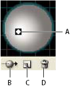

Lighting options
- Light
- Defines where the light is. Drag the light to where you want it on the sphere.
- Move Light Back button
- Moves the selected light behind the object.
- Move Light Front button
- Moves the selected light in front of the object.
- New button

- Adds a light. By default, new lights appear in the front center of the sphere.
- Delete Light button
-
Deletes the selected light.
Note: By default, 3D Effects assigns one light to an object. You can add and delete lights, but the object must always have at least one light.
- Light Intensity
- Changes the selected light’s intensity between 0% and 100%.
- Shading Color
-
Controls the object’s shading color, depending on the command you
choose:
- None
- Adds no color to the shading.
- Custom
- Lets you choose a custom color. If you choose this option, click the Shade Color box to select a color in the Color Picker. Spot colors are changed to process colors.
- Black Overprint
- Avoids process colors if you’re using a spot color workflow. The object is shaded by overprinting shades of black on top of the object’s fill color. To view the shading, choose View > Overprint Preview.
- Preserve Spot Color
-
Lets you preserve spot colors in the object. Spot colors can’t
be preserved if you chose Custom for the Shading Color option.

Lighting Sphere
- A.
- Selected light in front
- B.
- Move selected light to back or front button
- C.
- New light button
- D.
- Delete light button